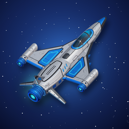

Star SparrowDrag, dodge, clear the galaxy. A space shooter with 80 levels, 8 Commanders and 9 ships.
Sürükle, kaç, galaksiyi temizle. 80 bölüm, 8 komutan ve 9 gemiyle bir uzay savaşı.
Write to us about a bug, a lost purchase or an idea for the game. We read every message.
Bir hata, kaybolan bir satın alma ya da oyun için bir fikir için bize yaz. Her mesajı okuyoruz.
Email supportDestek'e e-posta gönderdevfsk202@gmail.comOpen the Shop in the game (tap your credits at the top) and tap "Restore Purchases" with the same Apple ID. Credit packs are used up when bought and cannot be restored.
No. Ads only play when you choose to watch one for a reward.
Yes. Use "Privacy choices" in the game's Settings, or turn off tracking in iOS Settings → Privacy & Security → Tracking.
Open Settings in the game and tap "Reset save". Your progress is stored only on your device.
Oyunda Mağaza'yı aç (üstteki kredine dokun) ve aynı Apple ID ile "Satın alımları geri yükle"ye dokun. Kredi paketleri alınınca kullanılır, geri yüklenmez.
Hayır. Reklam yalnızca sen ödül için izlemeyi seçersen oynar.
Evet. Oyunun Ayarlar ekranındaki "Gizlilik tercihleri"ni kullan ya da iOS Ayarlar → Gizlilik ve Güvenlik → Takip'i kapat.
Oyunda Ayarlar'dan "Kaydı sıfırla"ya dokun. İlerlemen yalnızca cihazında tutulur.